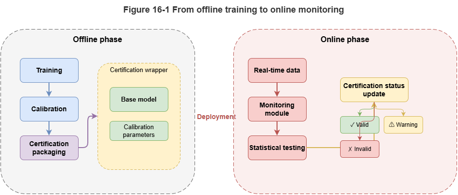
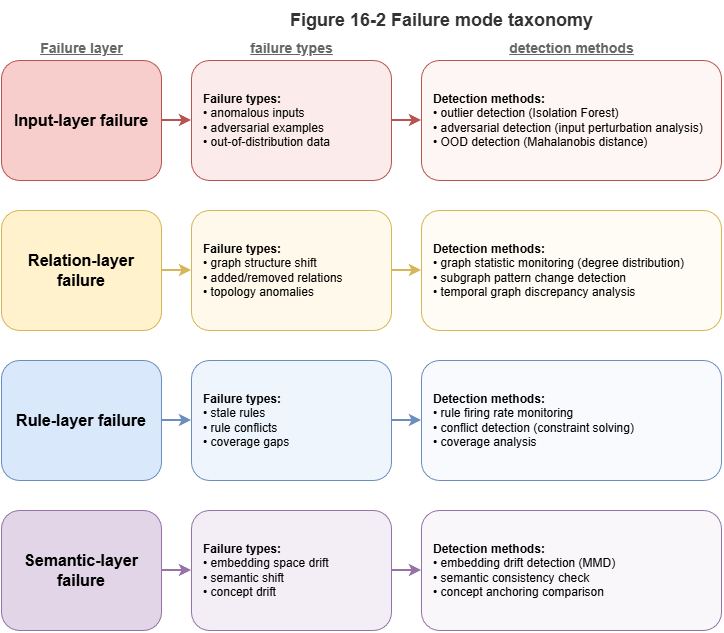
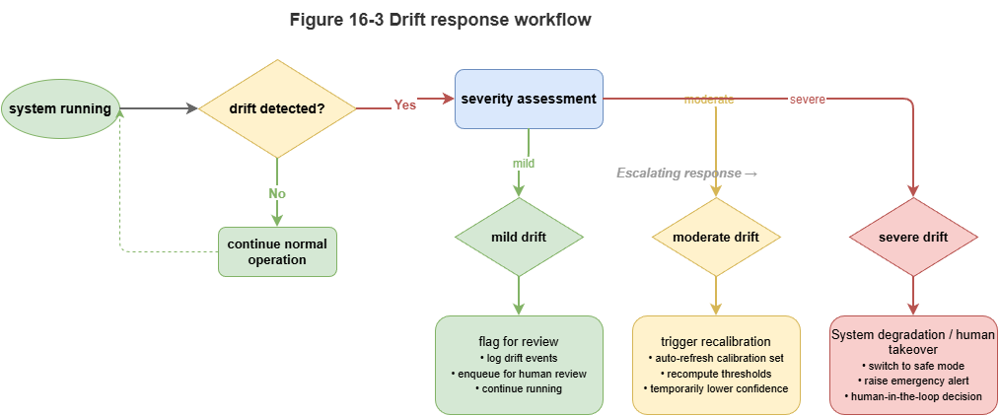

Chapter 15 established conformal prediction and uncertainty calibration so neuro-symbolic systems need not rely only on offline accuracy and subjective explanations but can attach statistically meaningful confidence bounds. In deployment, however, the environment is not a one-shot, static, closed distribution: inference is online, streaming, and often anomalous. Whether the system is static knowledge reasoning or dynamic temporal-graph reasoning, a persistent question arises: good offline test performance does not guarantee long-run online reliability. Environmental change, task shift, sampling bias, rule updates, sensor instability, and input distribution breaks can quickly invalidate train-time and calibration-time assumptions.
Trustworthy neuro-symbolic reasoning therefore cannot stop at offline calibration; it must add online monitoring, distribution drift detection, and statistical certification. Online monitoring is not mere logging—it continuously assesses whether inference remains in an acceptable statistical regime. Distribution drift is not just “inputs look different” but that the implicit conditions for reliability—data law, relational structure, concept semantics, scenario—may have changed. Statistical certification means outputs carry not only explanations and intervals but ongoing tests and alerts showing they still lie within certified applicability.
This chapter pushes neuro-symbolic systems from “acceptable offline calibration” to “online observable, warnable, certifiable.” We begin with typical online failure modes, then martingales and sequential validity, concept drift and anomaly detection, trustworthy scoring for static explanation chains and certification wrapping for dynamic conflict prediction, the gap between explainable and certification-grade outputs, and finally SkyCert as a unified certification bridge for hybrid neuro-symbolic reasoning.
16.1 Failure Modes in Online Inference#
Good offline experiments do not imply reliable online operation. Offline evaluation assumes near-train test distributions, stable KGs, stable rules, controlled inputs, and clear scenario bounds—assumptions that break in production. Understanding online failure modes is the first step toward statistical certification.
Input-layer failure affects raw data: more noise, missing features, latency, timestamp errors, sampling-rate jumps, outliers. In static reasoning, stale attributes or bad entity linking; in dynamic graphs, broken tracks or desynchronized updates. The system may still output, but calibrated bounds are no longer valid.
Relational-layer failure is central to neuro-symbolic systems: reasoning depends on graph structure, paths, and rules. New relation patterns, changed linking, or new couplings between tasks and airspace can destabilize learned patterns. In dynamic graphs, errors propagate along edges.
Rule-layer failure: regulations and operating standards evolve. Old rules may be incomplete or wrong. Outputs can look statistically stable yet be governance-invalid—trust is not only “prediction correct” but “basis still authoritative.”
Semantic-layer failure: LLMs may paraphrase or reorganize the same knowledge differently as language context shifts, hurting faithfulness even when facts and rules look unchanged. Surface fluency hides degraded explanation fidelity—hard to catch with accuracy alone.
Feedback-loop failure: outputs influence future inputs, human actions, and the environment. Biases accumulate; conservative routing may worsen congestion and shift the input distribution. Online trust is a long-horizon systems problem, not a single-shot prediction problem.
Online failure is multi-source and not exhaustible by one-off validation. Statistical certification aims to detect anomalies early, quantify risk, and trigger conservative response—making failure visible, warnable, and controllable before catastrophe.
16.2 Martingales and Sequential Validity#
A core online question: are current outputs still consistent with the statistical assumptions under which the system was calibrated? One reasonable prediction is insufficient; the sequence over time must remain plausible.
Martingale-based methods track whether nonconformity scores, residuals, or p-values accumulate abnormal trends rather than fluctuating within bounds. Under stable conditions, these quantities behave like controlled random noise; under drift, bias accumulates and becomes detectable.
In practice, martingale monitoring often pairs with conformal or nonconformity scores: map scores to p-values, build a martingale, alarm when the process grows. This elevates point anomaly detection to sequential validity testing—many failures appear as small persistent bias, invisible per step but visible in the aggregate.
Neuro-symbolic systems can monitor structured quantities: consistency between explanation chains and rule hits; temporal calibration of conflict probabilities vs. realized events; whether new graph relations deviate from history. Martingale tools are model-agnostic scaffolding.
Challenges: choice of score (sensitivity vs. false alarms), threshold policy (early conservative mode vs. late warning), and interpretability (martingales flag “sequence inconsistent” but not always which layer drifted)—pair with finer localization.
Martingales bridge offline calibration and online certification: the question becomes whether this stream still looks drawn from a controlled, certifiable mechanism.
16.3 Concept Drift and Anomalous Distributions#
Martingales ask whether the process is drifting; drift detection asks what drifted. Online neuro-symbolic failure is rarely “more noise” alone—inputs, structure, concepts, tasks, and rule applicability all move.
Concept drift: the same observation pattern no longer maps to the same semantics or decision. In neuro-symbolic settings, “concept” lives in labels, entities, ontology, rules, and templates—e.g., a flight pattern once low-risk may not be after density or corridor changes.
Anomaly / OOD detection: whether observations lie outside familiar support—in feature space, graph structure, temporal interaction patterns, or explanation topology. A sample can look normal numerically yet be structurally rare.
Drift types include covariate shift, relational-structure shift, rule-semantic shift, and task-configuration shift (e.g., single-agent static judgment vs. multi-agent coordination). They often co-occur.
Detection should fuse signals: input statistics, degree/path/subgraph patterns, rule-trigger and template drift, output calibration and nonconformity. Layered sensing supports where to intervene.
Drift detection should trigger certification boundary updates: if drift persists but old intervals and claims are reused, “certification” is hollow. Responses may escalate uncertainty, local recalibration, rule review, human gate, or suspension of automation—drift detection is a trigger in the certification loop, not an isolated alarm.
Static systems drift as explanations decouple from semantics; dynamic graph systems drift when temporal relation patterns leave the training envelope. The next two sections score static chains and wrap dynamic conflict predictions accordingly.
16.4 Trustworthy Scoring for Static Explanation Chains#
Static neuro-symbolic systems often produce explicit chains from facts and rule firings to conclusions. Explanation exists ≠ explanation is trustworthy. Chains can look polished yet lack evidence, misalign rules, skip steps, or inflate language.
Evidence faithfulness: are key claims backed by KG queries, rule hits, or records? Penalize LLM-filled background without retrieval support.
Rule alignment: the chain should show which constraints fired and how they imply the conclusion—not post-hoc rationalization.
Chain completeness: no missing critical intermediate rule nodes between fact A and conclusion C.
Semantic consistency: wording must match evidence strength—e.g., “requires human review” must not be paraphrased as “forbidden.”
Engineering: match rates to nodes/relations, rule-hit coverage in text, hallucination and jump detection, aggregate faithfulness/coverage/consistency scores; optionally wrap scores with intervals via conformal methods. Low scores trigger “more generative completion—please review”; high scores feed audit workflows.
Methodologically, explanations serve not only human understanding but verifiability—a prerequisite for certification-grade static reasoning.
16.5 Certification Wrapping for Dynamic Conflict Prediction#
Dynamic graph models output risk scores, alerts, or conflict probabilities in real time. Wrapping means turning empirical scores into objects with bounds, applicability conditions, and trigger logic for high-stakes control—not cosmetic relabeling.
Problems: raw scores are not calibrated probabilities; temporal patterns are distribution-sensitive.
Layers of wrapping:
Calibration: use calibration sets, online recalibration, or conformal methods so outputs are intervals, sets, or tiered alerts—not raw logits alone.
Temporal applicability: attach whether the current window and graph state still match calibration conditions; if martingale or drift monitors fire, downgrade certification tier or require human review.
Trigger policies: map risk + monitoring state to actions—e.g., high risk with valid monitoring → coordinated resolution; high risk under drift alarm → conservative warning and human confirm first.
Posterior auditability: log graph snapshots, key edges, time windows, calibration tier, and online status so investigators can reconstruct why the output was treated as sufficiently trustworthy at the time.
Integration: conformal (or related) risk sets + online applicability + control thresholds. Neuro-symbolic graphs can tie predictions to subgraphs and rules so wrapping is calibration + structure + online status, not numbers alone.
16.6 From “Explainable Outputs” to “Certification-Grade Outputs”#
Explainability helps adoption; it is insufficient for high-stakes trust. Outputs can be explainable yet unreliable, narratively coherent yet uncalibrated, rule-citing yet off-distribution.
Explainable outputs: describe process and human-readable rationale—communication.
Certification-grade outputs: additionally support verification, quantification, ongoing monitoring, and declared applicability—assurance plus governance.
Four contrasts: explanation vs. guarantee; single-instance narrative vs. sequential monitoring; semantic plausibility vs. statistical evidence; user-facing vs. regulatory/audit interfaces.
Architecturally: attach scores, intervals, coverage statements, calibration/drift status; grade outputs (auto-decision vs. hint vs. mandatory human review). The deliverable becomes a layered object: conclusion, explanation, statistical boundary, institutional state.
Static: chains must be faithful, alignable, and bounded; dynamic: predictions need calibrated risk objects, online status, and action tags. Trustworthy AI here means knowing when to be confident and when to be cautious—not perpetual confidence theater.
16.7 SkyCert: A Systematic Certification Bridge#
Neuro-symbolic high-stakes deployment needs unified calibration, monitoring, drift handling, explanation scoring, and dynamic wrapping—not a pile of disconnected widgets. SkyCert names a systematic bridge: one statistical assurance layer spanning static knowledge-driven reasoning and dynamic temporal-graph risk prediction.
Uniform certification objects: static chains and dynamic scores are both reasoning outputs with scores and applicability—not “text vs. number” silos.
Offline calibration + online monitoring: initial bounds from calibration data; martingales, drift, and structure anomalies track whether those bounds still hold—certification as state, not a one-time stamp.
Layered certification format: each inference may carry conclusion, evidence summary, explanation score, risk interval/set, drift status, certification tier, human-review flag—for internal control, operators, and regulators.
Unified static/dynamic interface: the neuro-symbolic distinction matters—SkyCert speaks one assurance language for “is this chain trustworthy?” and “is this risk prediction actionable?”
Embedded in control and governance: certification steers permissions—high score + normal monitoring → automate; medium score + mild drift → semi-automated confirm; high risk + sequence anomaly → conservative mode and reduced autonomy.
Four-stage bridge: (1) input alignment—raw neuro-symbolic outputs and evidence; (2) statistical wrapping—conformal calibration, scores, intervals; (3) online monitoring—martingales, drift, anomalies; (4) governance output—labels, triggers, audit logs—closing the loop.
SkyCert’s message: trustworthiness is not a sticker on the model but shared logic across inference, online state, and action routing—integrating explanation, confidence, drift, monitoring, and review.
Chapter Summary#
This chapter moves neuro-symbolic systems from offline calibration to online certifiable operation: failure modes across input, relation, rule, semantics, and feedback; martingales for sequential consistency; concept drift and multilayer anomaly detection; trustworthy scoring for static chains and certification wrapping for dynamic conflict prediction; the leap from explainable to certification-grade outputs; and SkyCert as a unified bridge for static and dynamic reasoning under shared statistical wrapping, monitoring, and governance.
Trustworthiness becomes a dynamic property: monitorable, gradable, auditable online. Chapter 17 connects certification-grade outputs to regulators, standards, and institutional process—technical trust toward governance trust.
Key Concepts#
Online monitoring: Continuous assessment that outputs remain in an acceptable statistical regime.
Martingale monitoring: Sequence-level tests for departure from calibration assumptions.
Concept drift: Changes in inputs, relations, semantics, or tasks that invalidate prior assumptions.
Certification-grade output: Conclusion plus scores, statistical bounds, online state, and graded action hooks.
SkyCert: Design pattern unifying static and dynamic neuro-symbolic assurance.
Exercises#
Why is online trustworthiness not reducible to offline test accuracy and one-shot calibration?
What failure modes do martingales capture best, and how do they differ from point anomaly detection?
Under severe concept drift, what is a reasonable certification-grade response strategy?
Case Study#
Three months after city airspace deployment: seasonal change and new vehicle types gradually misalign explanations and miscalibrate conflict predictors; online monitors detect sequence and drift signals before incidents and trigger conservative degradation.
Figure Suggestions#
Figure 16-1: Closed loop from offline calibration to online monitoring.

Figure 16-2: Layered view of input, relation, rule, and semantic failures.

Figure 16-3: Graded response after drift: review, recalibrate, degrade control.

Formula Index#
This chapter emphasizes online statistical processes and wrapping; consolidate monitoring as nonconformity → p-value → martingale.
Index: nonconformity scores, sequential validity, drift thresholds, certification labels, graded response.
References#
Gama, J., Žliobaitė, I., Bifet, A., Pechenizkiy, M., & Bouchachia, A. (2014). A Survey on Concept Drift Adaptation. ACM Computing Surveys, 46(4), Article 44.
Vovk, V., Nouretdinov, I., & Gammerman, A. (2003). Testing Exchangeability On-Line. Proceedings of the 20th International Conference on Machine Learning (ICML).
Angelopoulos, A. N., & Bates, S. (2023). Conformal Prediction: A Gentle Introduction. Foundations and Trends in Machine Learning, 16(4), 494–591.
Lu, J., Liu, A., Dong, F., Gu, F., Gama, J., & Zhang, G. (2019). Learning under Concept Drift: A Review. IEEE Transactions on Knowledge and Data Engineering, 31(12), 2346–2363.
Hendrycks, D., & Gimpel, K. (2017). A Baseline for Detecting Misclassified and Out-of-Distribution Examples in Neural Networks. International Conference on Learning Representations (ICLR).